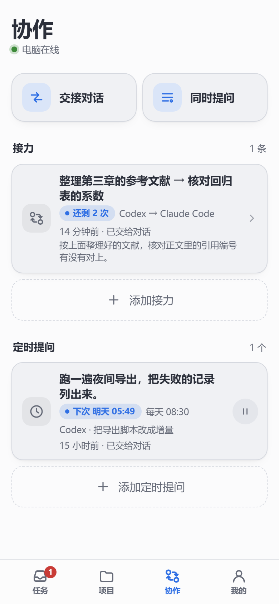

1 2 3 4- 1交接对话把一段对话的进展交给另一段：电脑端整理最初和最近的要求、最后的回答、最近的操作，写给接手的对话。
- 2同时提问同一个问题一次发给几段对话，例如让 Claude Code 和 Codex 各给一个方案。
- 3接力一段对话停下后，把它最后的回答连同你的要求交给另一段，例如 Codex 改完由 Claude Code 审查。次数用完就停。
- 4定时提问到时间把一句话发给指定的对话：一次、每天定时，或每隔一段时间。卡片上写着下次的时间和上次的结果。

1 2 3 4